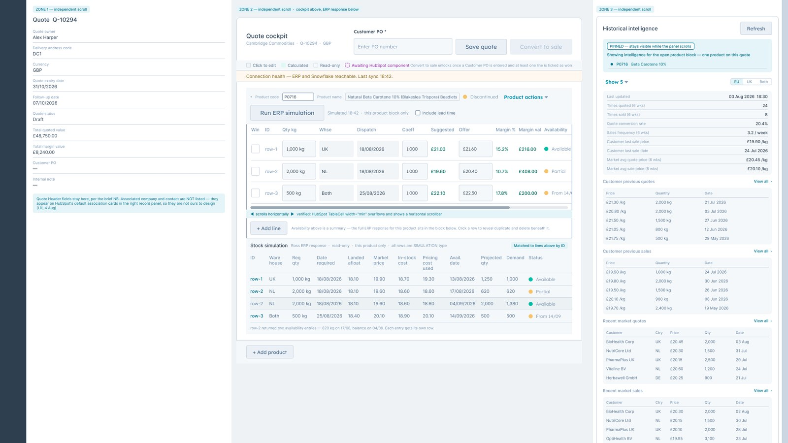
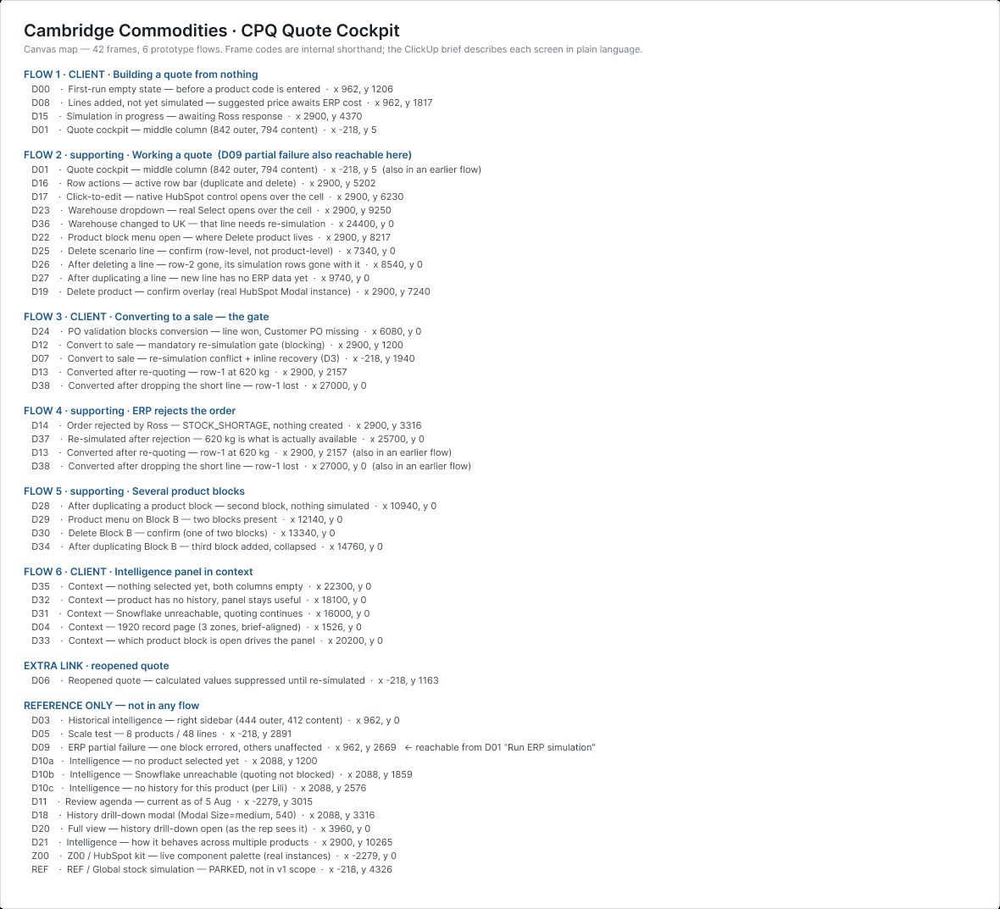
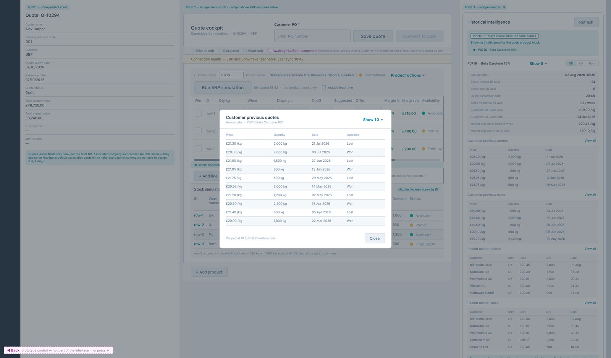

A quoting cockpit built inside a platform that will not let you write CSS
Cambridge Commodities is a bulk ingredient supplier. Their sales reps were building quotes across multiple products, each with several scenario lines varying by quantity, warehouse and dispatch date, every line needing live cost and stock data from an ERP. It was slow, and it lived nowhere near the CRM.

The constraint that produced the design
HubSpot UI extensions allow no custom CSS. You build only from HubSpot's own component library, at the sizes those components come in. There is no talking your way around it and no clever workaround. If a decision cannot be expressed in a real component at its real size, it is not a decision, it is a wish.
I have come to think this is a better way to work than having a blank canvas, because a constraint forces you to justify things you would otherwise settle by taste.
Click to edit was not a style choice
HubSpot's Input, Select and DateInput components are 240 pixels wide across all 488 variants. Three editable columns at native size consume 720 of the 774 pixels available in that card. There was no version of this where three inputs sat side by side. So editable cells became compact, and open the real control on click. The pattern came out of the measurements, not out of a moodboard.

What I verified instead of assumed
The scenario table is 973 pixels wide inside a 794 pixel card. Most designers hand that over
and find out during build whether it works. I checked HubSpot's documentation first and confirmed
that TableCell width="min" overflows and produces a horizontal scrollbar, so the
overflow was designed behaviour rather than a surprise for the developer.
That is a small thing. It is also the difference between a handover a developer can build and one they have to reinterpret.

Designing the consequences of the architecture
The system never stores ERP costs. That is deliberate and it is the right call technically, but it has a consequence a sales rep will feel: reopen a quote and the prices are blank until you re-simulate. That is counterintuitive enough that it deserved its own screen and its own explanation, rather than a rep assuming the tool had lost their work.
I also proposed that editing any ERP input, quantity, warehouse or dispatch date, should clear that line's prices and un-tick it as Won, because the stored figures no longer describe the line. I reasoned that from the architecture and flagged it for the developer to confirm rather than asserting it as settled.

Failure states as first class flows
Most design work ships the happy path and leaves engineering to invent the error states. I think that is backwards, because the error states are where a sales rep loses trust in a tool, and a tool a rep does not trust does not get used.
- Partial ERP failure, where some lines return and others do not
- ERP order rejection, with two distinct recovery routes that produce genuinely different orders
- Snowflake unreachable, so the historical intelligence panel has no data to show, without blocking quoting
- A mandatory re-simulation gate that catches a stock shortage before anything is written


- 43frames covering the full quote lifecycle
- 6named prototype walkthroughs, three of them client facing
- 3,000+real HubSpot component instances against two local copies
- 3open architectural questions annotated rather than decided silently
The whole system on one canvas
Every frame is prefixed and sequenced, from the first run empty state through partial failure, blocking gates, rejection recovery and an eight product, 48 line scale test. A project manager or a developer can open this file and find the state they need without me in the room.


The three questions I could not answer, I annotated for the developer instead of deciding them quietly: whether line IDs renumber after a delete, whether multiple product blocks can expand at once, and whether committing an ERP input should invalidate that line.
I would rather hand over a design with three honest open questions on it than one that looks finished and quietly guesses. The guesses are the expensive part, because nobody knows they were guesses until the build is half done.
What I would do differently
I would have pulled the developer into the component measurement work a week earlier. I established the 240 pixel constraint myself and then designed against it, which worked, but he had that knowledge already and we could have skipped a cycle. Being right on your own is slower than being right together.